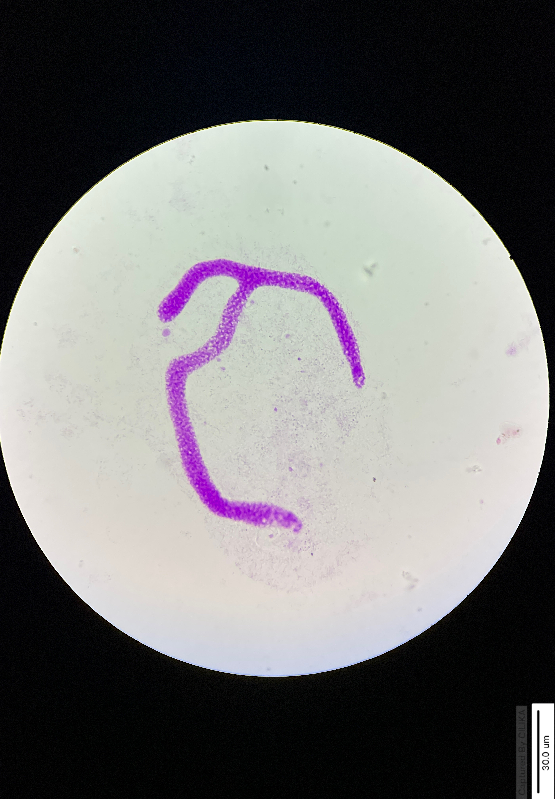

To cytochemically demonstrate the presence of DNA in the ciliates using Feulgen reaction
Carnoy's fixed ciliates on slides
All glassware and plastic ware used should be sterilized:
Cytochemical staining method for nucleic acid depends on the properties of nucleic acid components or nucleotides.
DNA can be studied by means of the nuclear reaction,a technique developed by Feulgen and Rossenbeck.
The deoxyribose sugar present in DNA is responsible for Feulgen reaction.The fixed cells are first subjected
to selective mild hydrolysis and then treated with Schiff’s reagent.The property of this reagent to form a magenta
complex with aldehyde group is the basis of Feulgen reaction.Acid hydrolysis either removes RNA or it doesn`t get
hydrolyzed due to the presence of the hydroxyl group of ribose sugar.
The reaction takes place in two steps:
• The acid hydrolysis removes the purine bases at the level of purine deoxyribose glycosidic bond of DNA
thus unmasking the aldehyde groups of deoxyribose.
• The free aldehyde group reacts with Schiff’s reagent, a watery colourless stain that turns magenta and gives colour to DNA.
Feulgen reaction specifically stains only DNA under controlled conditions. If acid hydrolysis is applied for too long, especially
at elevated temperature,then DNA also can be completely removed, and this will result in the failure of the technique.
• The purine bases are removed and after that, the deoxyribose radicals are bound to phosphoric acid of apurinic acid macromolecule
and aldehyde groups are formed on deoxyribose.
• Histones (protein associated with DNA) are progressively removed.
The binding of the Schiff's reagent (Fuchsin-sulphurous acid, Leucobasic fuchsin) with aldehyde groups forming the aldehyde-stain
product, is very strong and cannot be extracted either by alcohol or by prolonged washing under running tap water. The feulgen
reaction can be a semi--quantitative technique if the aldehydes in the cell are only those produced from the hydrolysis of DNA.
Microdensitometer or microscpectrophotometer can be used to measure the pink feulgen reaction to quantify DNA.
Animation of the experiment:--
Click here to perform the simulation

Nucleus of the ciliated protozoan stains magenta.
The cytoplasm remains unstained.